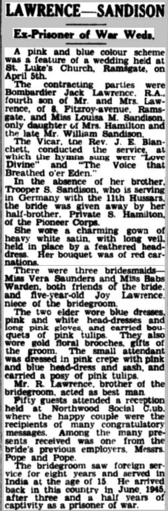
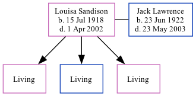

Louisa Minnie Lawrence (née Sandison) 1918 - 2002 [ Home ] | [ Calendar ] | [ Surnames Index ] | [ Family History ]Louisa Sandison , the wife of Jack Lawrence (the first cousin once-removed on the mother's side of Nigel Horne ), was born in Thanet, Kent, England on Jul 15, 19181,2,3,4 and. She married Jack (with whom she had 3 surviving children Susan M , Andrew and Deborah E ) on St Luke's Church, Hollicondane Road, Ramsgate, Kent, England on Apr 5, 19475 .
She died in Thanet on Apr 1, 20022,4 .
Citations England & Wales births 1837-2006 - Findmypast England & Wales deaths 1837-2007 - Findmypast England & Wales, Birth Index: 1916-2005 Online publication - Provo, UT, USA: The Generations Network, Inc., 2008.Original data - General Register Office. England and Wales Civil Registration Indexes. London, England: General Register Office. © Crown copyright. Published by permission of the Cont England & Wales, Death Index: 1984-2005 Online publication - Provo, UT, USA: The Generations Network, Inc., 2007.Original data - General Register Office. England and Wales Civil Registration Indexes. London, England: General Register Office. © Crown copyright. Published by permission of the Cont England & Wales Marriages 1837-2005 - Findmypast Media East Kent Times and Mail - 26 Apr 1947  England & Wales births 1837-2006 - BMD/B/1918/3/AZ/001100/067 England & Wales marriages 1837-2005 - BMD/M/1947/2/PZ/000208/126 England & Wales deaths 1837-2007 - BMD/D/2002/4/85046646 Family Tree Interactive Map
Map
Generated by ged2site . Last updated on Feb 18, 2025